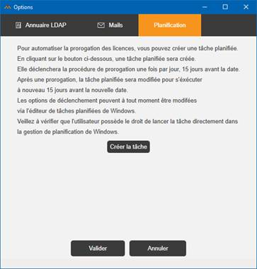

Accueil | DLMT - Gestion des licences nommées | Divalto Licences Management Tool (DLMT) | Planifier la prorogation d’un serveur de licences
Par le choix « Planifier la prorogation » du menu Général,
il est également possible de créer une tâche planifiée qui prorogera automatiquement
le serveur de licences 15 jours avant la date limite de prorogation.

La tâche planifiée s’exécutera 15 jours avant la date limite de prorogation. En cas de succès, elle planifiera la tâche 15 jours avant la prochaine échéance. En cas d’échec, elle effectuera une nouvelle tentative chaque jour jusqu’à la date limite de prorogation.